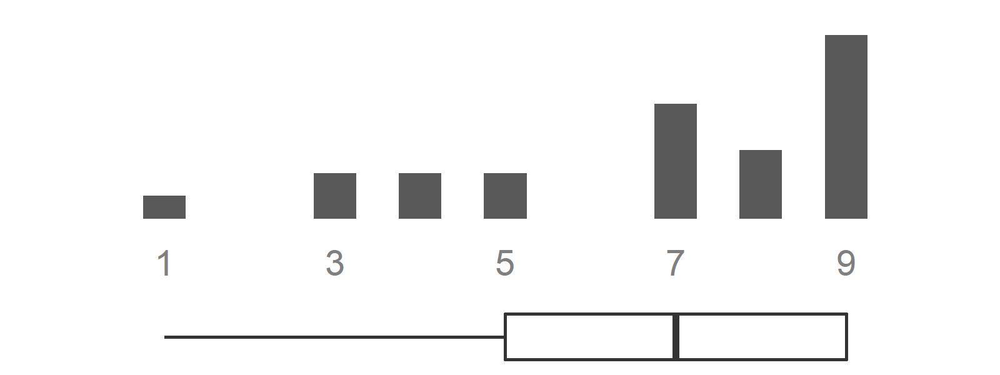
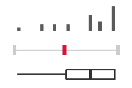

6 Round 2
6.1 E-questionnaire management through REDCap
Round 1 (experts meeting following an adapted Nominal Group Technique procedure - not detailed in this user guide, see publications for more details) is over. Experts have generated and prioritized thematic proposals that you have reformulated into statements (type 1, 2 and 3 questions - see Chapter 2).
The following steps should be done in 1 day:
Within your
round 2 REDCap project: replace all “xxx” with the texts of your actual statements and answer options. Duplicate type 1, 2 and/or 3 questions’ “skeleton” based on your needs, i.e., the number of sections and types of questions per section that you wish to include in this e-questionnaireTest the e-questionnaire to verify comprehensiveness of the content and the absence of technical bugs
Move this
round 2 REDCap projectinto production mode - talk with your REDCap Admin if necessarySend the hyperlink to experts (participants) with a deadline for e-questionnaire completion
You can now relax during 3-4 days, until the deadline is over.
Data collection can be observed in real time by accessing the ‘Dashboard’ Menu in your round 2 REDCap project. When getting close to the deadline, remember to send a personalized email to any experts who has not yet completed the e-questionnaire.
Once data collection for round 2 is over, you can open 0_run_ME_dft2.R. It will show you the order of files to update and run in order to upload, process and analyse the data and to create reports.
6.2 Update data
- Run
./code/dft2/01a_dft2_update_data_with_REDCapR.R
This code will connect to the corresponding REDCap project using the token, downloads the raw data and metadata from the project, and save them as *.RData files. It also creates *.xlsx tables by type of question (1, 2 and 3, see Chapter 2) with the raw data, which can be used for quick checks, if necessary.
6.2.1 Detail of outputs
| Folder | Output file | Description |
|---|---|---|
./data/redcap_data_raw/ |
dft2_metadata.RData |
Raw metadata |
./data/redcap_data_raw/ |
dft2_data_redcapr_raw.RData |
Raw data |
./output/check/ |
chk_dft2_type1_raw.xlsx |
Quick check table with raw data for type 1 questions |
./output/check/ |
chk_dft2_type2_raw.xlsx |
Quick check table with raw data for type 2 questions |
./output/check/ |
chk_dft2_type3_raw.xlsx |
Quick check table with raw data for type 3 questions |
6.3 Recode data
- Update as required and run
./code/dft2/01b_dft2_recode_data.R
This code will process the raw data and the metadata downloaded in Section 6.2, in order to create the “clean” data and metadata tables. In particular, it will:
correct labeling errors, typos, etc.
simplify labeling
define the lists of variables by type of questions (1, 2, 3)
do a conditional deduplication (in case one or several participants have filled in several REDCap records per person => keep the latest chosen answer option and all comments)
save clean data and metadata in RData format

- create visuals (*.png) for all type 1 questions only, showing the distribution of answers on a 1 to 9 scale and a boxplot - see Figure 6.1
6.3.1 Detail of outputs
| Folder | Output file | Description |
|---|---|---|
./data/dft2/ |
dft2_data_clean.RData |
Clean data |
./data/dft2/ |
dft2_lookup_final.RData |
Clean lookup table (metadata) |
./data/dft2/ |
dft2_lookup_value_labels_final.RData |
Clean lookup table (metadata) with value labels for type 1 and 2 questions |
./output/png/ |
dft2_*_s*_type1.png |
Visuals for all type 1 questions |
6.4 Prepare tables without participant id
- Run
./code/dft2/02a_dft2_prepare_tables_without_participant_id.R
This code will analyse the “clean” data (generated in Section 6.3) to create the group result tables (= statistical and graphical summaries).
It automatically calls code ./code/dft2/01c_dft2_define_cols.R.
It also creates and saves in *.xlsx format tables containing only the “no opinion” responses, allowing a quick check if necessary.
6.4.1 Detail of outputs
| Folder | Output file | Description |
|---|---|---|
./output/RData/ |
dft2_type0_zz1.RData |
Table with characteristics of participants |
./output/RData/ |
dft2_type1_zz_combined.RData |
Table with results of all type 1 questions |
./output/RData/ |
dft2_type2_zz1.RData |
Table with results of all type 2 questions |
./output/RData/ |
dft2_type3_zz1.RData |
Table with results of all type 3 questions |
./output/RData/ |
dft2_dt_comments_m.RData |
Table with all comments |
./output/check/ |
dft2_type1_zz0_no_opinion.xlsx |
Quick check table of ‘no opinion’ responses for type 1 questions |
./output/check/ |
dft2_type3_zz0_no_opinion.xlsx |
Quick check table of ‘no opinion’ responses for type 3 questions |
6.5 Update introductory texts
Update the content of your introductory texts (*.docx) if needed, as indicated in the Section 5.6.
Run
./code/00_update_texts_intro.R
This code updates the local directory of texts used in the introduction of the report sections (from the available and up-to-date directory on the server).
6.6 Publish the generic report
The number of sections and the number of each type of questions within these sections will vary between projects.
The list of sections needs to be defined manually in 000_parameters.R.
Publish the generic report by running the lines below in
0_run_ME_dft2.R### . publish Rmd ---- ### .. dft2_report_generic.Rmd ---- input <- "analysis/dft2/dft2_report_generic.Rmd" output_file <- here::here('output', 'reports', 'dft2', stringr::str_glue("dft2_report_generic_{Sys.Date()}.docx")) rmarkdown::render( input = input, output_file = output_file)
This code will create the word document (“generic report”) by inserting the introductory texts (updated in Section 6.5) and the results tables (created in Section 6.4), based on a reference word template.
It automatically calls ./code/dft2/01c_dft2_define_cols.R and ./analysis/00_child_intro_method.Rmd. Then, for each section, it calls ./analysis/dft2/dft2_child_section.Rmd, which will create tables for each type of questions that are in the section (conditional for loop), by running two codes:
./code/03a_create_flextable_results_type_1_generic.R: creates the result table for type 1 statements in the section and for their comments./code/03b_create_flextable_results_type_2_3_generic.R: creates the result tables for type 2 and 3 statements in the section and for their comments
6.6.1 Detail of outputs
| Folder | Output file | Description |
|---|---|---|
./output/reports/dft2 |
dft2_report_generic_date_YYYY-MM-DD.docx |
Generic report with date |
6.7 Publish all individualized reports
Publish individualized reports - one for each respondent of round 2 - by running the lines below in
0_run_ME_dft2.R### .. 05_dft2_to_render_individual_reports.R ------------------------------ ### TAKES time ... have a coffee, a walk, a nice chat with someone ... source(here::here('code', 'dft2', '05_dft2_to_render_individual_reports.R'), encoding = 'UTF-8')
This code will create the word document for each expert participant (“individualized report”), based on a word template, by inserting the email of the expert, the introductory texts (updated in Section 6.5), as well as the group result tables with individual answers for each statement.

The code ./analysis/dft2/dft2_report_per_participant.Rmd (automatically called within ./code/dft2/05_dft2_to_render_individual_reports.R) uses an iterative loop to create the individualized result report for each participant by calling automatically:
./code/dft2/01c_dft2_define_cols.Rand./code/dft2/02b_dft2_prepare_tables_participants.R: adds results of the participant to the generic table, and includes plots like Figure 6.2.
It will then call ./analysis/00_child_intro_method.Rmd as well as, for each section, ./analysis/dft2/dft2_child_section.Rmd, which will create tables for each type of questions that are in the section (conditional for loop), by running two codes:
./code/04a_create_flextable_results_type_1_participants.R: creates the result table for type 1 statements with individual answers in the section and for their comments./code/04b_create_flextable_results_type_2_3_participants.R: creates the result table for type 2 and 3 statements with individual answers in the section and for their comments
6.7.1 Detail of outputs
| Folder | Output file | Description |
|---|---|---|
/output/reports/dft2/report_by_participant/ |
dft2_report_participant_X_YYYY-MM-DD.docx |
Individualized reports (one per participant) with date |
Congratulations: you are now ready to conduct round 3!